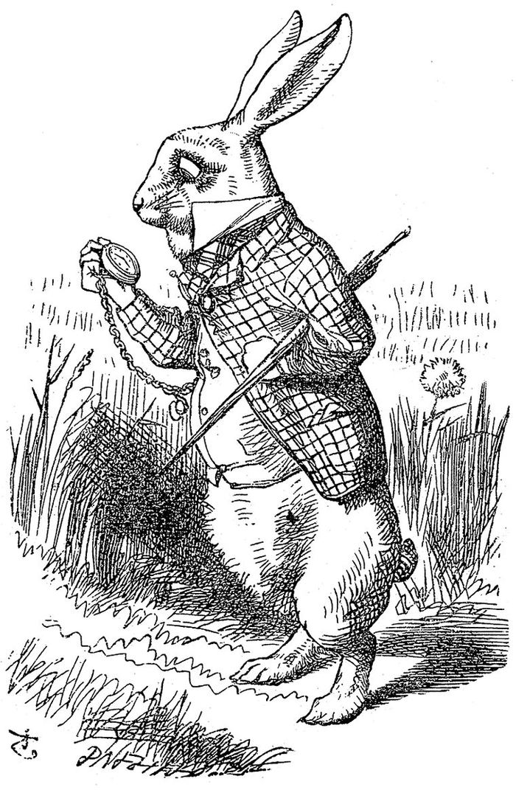
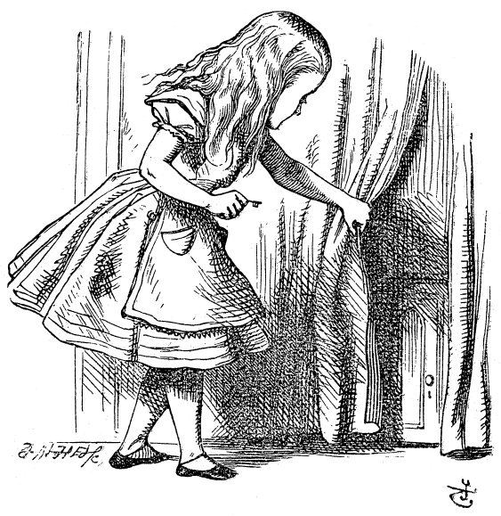
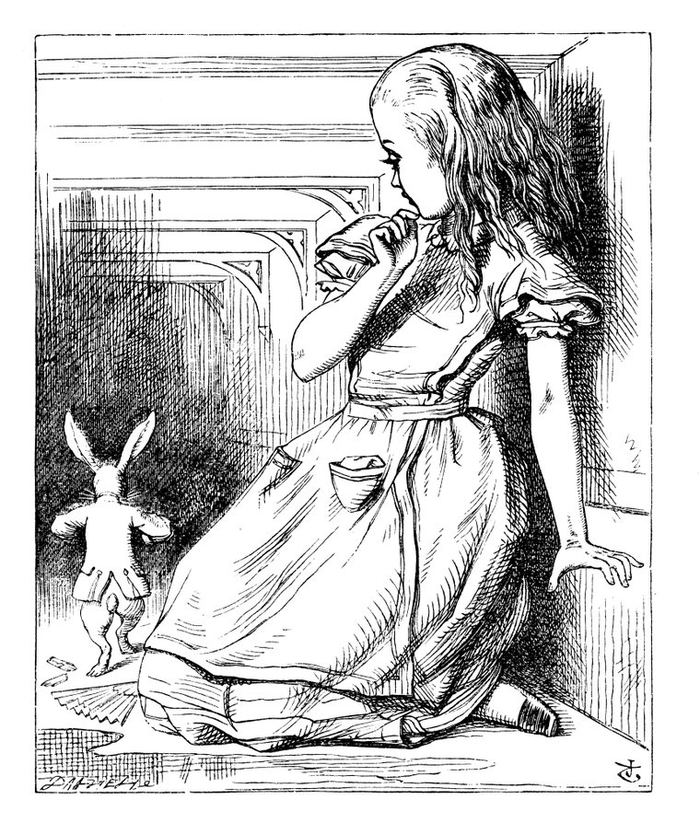
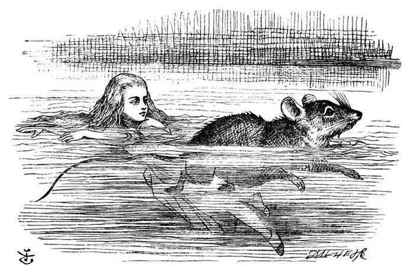
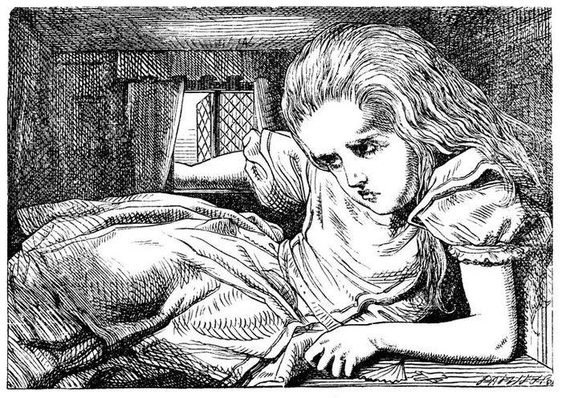
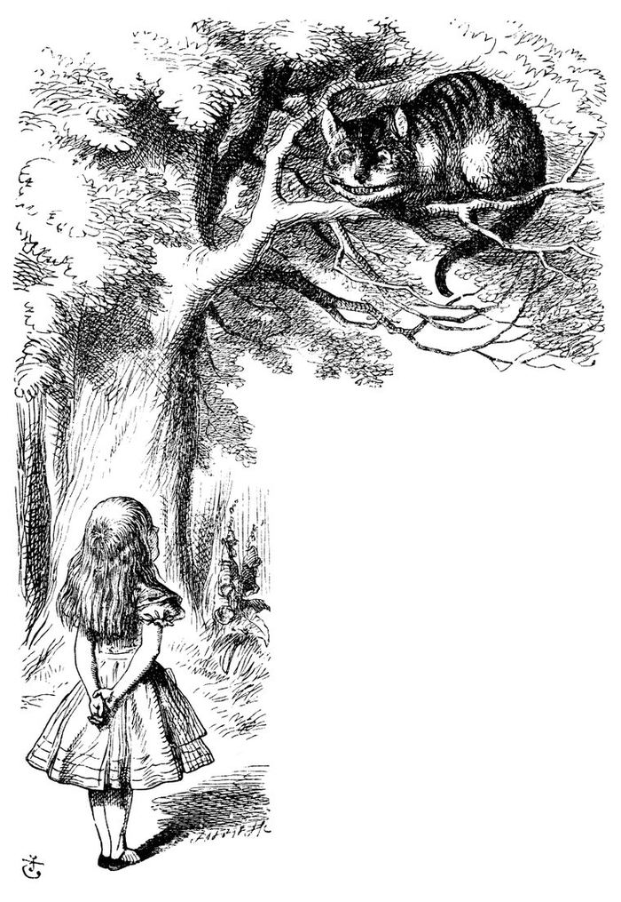

a door on the street · no floor behind it
Stimpunks.Love · a door on the street, a shaft behind it
The Rabbit Hole
You meant to look up one thing.
Every other door on this street opens onto a room you can stand in. This one opens onto a shaft, and there is no floor at the bottom of it — just more page. The daylight you came in by is above and behind you, and there is less of it the further down you read. That is not a warning. That is the amenity.
Rabbit holing
You didn’t mean to be here for three hours. You meant to look up one thing. Welcome to the rabbit hole. You’re among friends.
Those two sentences are the opening of our own glossary entry, Rabbit Hole, and this whole room is built out of that page. Read it first if you would rather have the argument straight; everything down here is that argument with the lights turned off.
The short version. For monotropic minds — and a great many Autistic and ADHD people are monotropic — the rabbit hole is not a detour. It is the destination. Monotropism describes attention that goes in depth rather than in breadth: everything gets pulled into one blazing interest tunnel, and off you go. The rabbit hole is what that tunnel looks like from the outside. From the inside it looks like flow.
Which is why the research rabbit hole is its own genre, and a good one. One citation leads to another. One tab becomes seventeen. One question opens into a whole field you did not know existed. This is not a failure of discipline. It is how knowledge actually gets built — serendipitously, associatively, joyfully. And then you surface, blinking, and need to tell somebody — everybody — everything you found, which is the infodump: the rabbit hole speaking.
Cal Newport’s name for the undistracted end of this is deep work, and we have no glossary page for it, so this sentence is where it gets credited and there is nothing of ours to link. Neurodivergent people were doing it a long time before it had a productivity branding deal.
Go down the rabbit hole (embrace serendipity). You have to embrace the accidental. — Ryan Holiday, The 5-Step Research Method I Used For Tim Ferriss, Robert Greene, and Tucker Max, quoted on our own entry
Rabbit holes are how some of us learn best. They are how some of us love best. Go deep.
Where the hole comes from
The metaphor is Lewis Carroll’s. Wikipedia’s article on the idiom puts it plainly: going down the rabbit hole means getting deep into something, or ending up somewhere strange — and it does not promise which. The image comes from Alice’s Adventures in Wonderland, 1865, where the whole adventure starts with somebody following a rabbit into a burrow without once considering how they were going to get out again.
There is a name for the version of this that most of us do daily. Wikipedia calls it the wiki rabbit hole and defines it as a learning pathway — the route a reader travels by navigating from topic to topic, each one further from where they started than the last. Not a distraction with a cute name. A pathway, with a shape, that people deliberately go looking for.
Our glossary entry illustrates that with Glenn Newcomer’s network diagram of a wiki rabbit hole, published on Wikimedia Commons under CC BY-SA 4.0. It is not copied in here, because the drawing beside the argument on that page is doing its job where it is, and this room would only be borrowing it. Go and look at it there.
{kind=link}
Six cuts from 1865
John Tenniel engraved the illustrations for the first edition of Alice’s Adventures in Wonderland. He was born in 1820 and died in 1914 and the book came out in 1865, so these are out of copyright everywhere, and each scan below carries an explicit public domain statement on Wikimedia Commons. They are the only bright things down here, which is not a lighting decision: they are black ink on white paper, and that is what they look like in the dark.
The 1865 edition captioned none of its illustrations — they sat in the text beside the passages they went with. So there is nothing printed for us to quote, every word beside each one here is ours, and which engraving sits beside which paragraph is our reading and not the book’s arrangement. Stated, rather than left for you to assume. None of them has been cropped, tinted or filtered.

the way in
You do not decide to go down. You notice something going somewhere in a hurry and you want to know where.
Wood engraving by John Tenniel for the first edition of Alice’s Adventures in Wonderland, 1865. Public domain. The scan we used. Where it sits on this page is our reading and not the book’s arrangement.
{kind=link}

one thing leads to another
The tab behind the tab. One citation leads to another, one article becomes seventeen, and the door you find was not on the wall a minute ago.
Wood engraving by John Tenniel for the first edition of Alice’s Adventures in Wonderland, 1865. Public domain. The scan we used. Where it sits on this page is our reading and not the book’s arrangement.
{kind=link}

from the outside
This is what a monotropic attention system looks like to somebody standing in the doorway. From in there it does not feel like this at all; it feels like flow.
Wood engraving by John Tenniel for the first edition of Alice’s Adventures in Wonderland, 1865. Public domain. The scan we used. Where it sits on this page is our reading and not the book’s arrangement.
{kind=link}

somewhere strange
The idiom means getting deep into something OR ending up somewhere strange, and it does not promise which. You meant to look up one thing.
Wood engraving by John Tenniel for the first edition of Alice’s Adventures in Wonderland, 1865. Public domain. The scan we used. Where it sits on this page is our reading and not the book’s arrangement.
{kind=link}

the hole you outgrew
Three hours in and the subject is larger than the room you were reading it in. This is the part nobody warns you about and it is not a failure of discipline.
Wood engraving by John Tenniel for the first edition of Alice’s Adventures in Wonderland, 1865. Public domain. The scan we used. Where it sits on this page is our reading and not the book’s arrangement.
{kind=link}

which way
Somewhere in every good hole there is a thing in a tree that answers the question you asked with a better one. Be wary of the holes you rabbit; some of them are somebody's business model.
Wood engraving by John Tenniel for the first edition of Alice’s Adventures in Wonderland, 1865. Public domain. The scan we used. Where it sits on this page is our reading and not the book’s arrangement.
{kind=link}
Be wary of the holes you rabbit
Our own entry says that line, and it is the reason this room is not simply an advertisement for going deep. There is a difference between a hole you dug and a hole that was dug for you.
What we are witnessing is the computational exploitation of a natural human desire: to look “behind the curtain,” to dig deeper into something that engages us. — Zeynep Tufekci, YouTube, the Great Radicalizer, The New York Times, 2018, quoted on our own entry
The appetite is the same appetite. What changes is who chose the next thing. A recommendation engine tuned to keep you in the tunnel is not serendipity, it is somebody’s revenue, and the tunnel it builds runs somewhere specific. Monotropic attention is not a vulnerability to be patched — but it is worth knowing that it is valuable to people who do not have your interests at heart.
Which is what the rest of this street is for. Stimpunks rabbit holes are meant to take you behind the curtain of the edges inclusively and compassionately, and to hand you back out at the other end with somewhere of your own to go. There is a trail at the foot of this page and every step on it is a page a person wrote.
This room has no recommendation engine, no autoplay, no next-up, and nothing that decides for you what comes after. Seven things are offered, all of them named, and nothing reaches YouTube until you press it.
Remember what the Dormouse said
Grace Slick wrote White Rabbit after a childhood of being read Carroll and an adulthood of playing one Miles Davis record until it came out again in something of her own. She has told that story herself, in the Wall Street Journal: she identified with Alice, she went from a planned and bland 1950s into a rock band without looking back, and she called it her own Alice moment, heading down the hole. It is the most famous piece of rabbit-holing in popular music and it is also a description of how a monotropic mind works on something. Anything I love I’m going to cram into my ears, nose and mouth until I use it up, she said, which is the infodump’s cousin.
The words to it are not printed on this page, and that is deliberate. Our glossary entry has them; this street says in three places that nothing musical is hosted here, and a quote bank one door along refuses songs outright because song lyric reproduction is a minefield in the United States in a way prose is not. So you get the recordings, credited, and Slick’s own account of writing them, and the words stay where their publisher put them. The two section titles on this page that are her phrases are credited as hers, here.
These are every embedded video on our glossary entry, in that page’s own order — which interleaves them with the quotations they sit under, so the order is an argument somebody made and not a playlist to re-sort. Three are published by a rights holder and four are re-uploads on individuals’ channels; each plate says which, because that changes how long a link lasts. Nothing plays until you press play, and each button says how long it runs before you do.
-
RUNS 2:39 · ON YOUTUBE, VIA JEFFERSON AIRPLANE ON YOUTUBE · PUBLISHED BY THE RIGHTS HOLDER
White Rabbit (official lyric video)
Jefferson Airplane
The 1967 recording, as the label publishes it. Grace Slick wrote it after reading Carroll as a child and then playing one record over and over on the way to writing it — her own account of that is linked beside the section this sits in. The words are hers and are not printed here.
-
RUNS 2:54 · ON YOUTUBE, VIA LPROAD2REVOLUTION · A RE-UPLOAD ON AN INDIVIDUAL’S CHANNEL
White Rabbit, live at Woodstock, 1969
Jefferson Airplane
A re-upload of the Woodstock performance on an individual's channel, captioned by whoever put it up. Not an official release, and it carries the uploader's own fair-use notice, which is a thing they decided rather than a thing we are vouching for.
-
RUNS 2:29 · ON YOUTUBE, VIA DUSTASDU · A RE-UPLOAD ON AN INDIVIDUAL’S CHANNEL
White Rabbit, live on The Smothers Brothers Comedy Hour
Jefferson Airplane
The Smothers Brothers appearance, re-uploaded by an individual who names the DVD it was taken from. Two minutes and a half of American network television deciding to broadcast this, which is its own small piece of history.
-
RUNS 3:01 · ON YOUTUBE, VIA GRACE POTTER · PUBLISHED BY THE RIGHTS HOLDER
White Rabbit (Jefferson Airplane cover)
Grace Potter and the Nocturnals
A cover, on the covering artist's own channel. A song that is about following something down a hole is a good song to find other people have followed down.
-
RUNS 4:49 · ON YOUTUBE, VIA MOVIES SOUNDTRACK · A RE-UPLOAD ON AN INDIVIDUAL’S CHANNEL
White Rabbit, trailer edit for The Matrix Resurrections
an unnamed hand, on the Jefferson Airplane recording
An edited remix built on the Jefferson Airplane recording, uploaded to a soundtrack channel. Nobody is credited with the edit anywhere on the upload, so nobody is credited with it here either. The film franchise that took this metaphor and ran with it for twenty-five years is the reason it is on the page at all.
-
RUNS 16:22 · ON YOUTUBE, VIA COLUMBIA/LEGACY, VIA YOUTUBE'S MILES DAVIS CHANNEL · PUBLISHED BY THE RIGHTS HOLDER
Concierto de Aranjuez: Adagio, from Sketches of Spain
Miles Davis and Gil Evans
Joaquín Rodrigo's concerto, arranged by Gil Evans, recorded 1960. Slick has said she played this album over and over for hours and that it came out again in what she wrote — which is the rabbit hole working exactly as our glossary describes it: something goes all the way in and comes back out as something else.
-
RUNS 12:52 · ON YOUTUBE, VIA IGNATIOS SIMOS · A RE-UPLOAD ON AN INDIVIDUAL’S CHANNEL
Solea, live at Montreux, 1991
Miles Davis with Quincy Jones and the Gil Evans Orchestra
The other long piece off Sketches of Spain, played live at the Montreux Jazz Festival in 1991, re-uploaded by an individual. Thirty-one years after the studio recording and a few weeks before Davis died.
Feed your head
Three words of Grace Slick’s, used here as a heading the way our glossary entry uses them, and credited rather than borrowed quietly.
The counterculture that produced that song also produced the personal computer, and the book that traces the second out of the first takes its title from the same place. John Markoff’s What the Dormouse Said is about people who learned how to learn on their own, and it makes the case that this turned out to be one of the most important things any of them ever did.
Learning how to learn on his own proved one of the most important lessons of his life. — John Markoff, What the Dormouse Said: How the Sixties Counterculture Shaped the Personal Computer Industry, quoted on our own entry
Which is the same claim our own pages make about rabbit holes, arriving from a completely different direction. A roaming autodidact is not a person who refused to be taught. It is a person who went and got it.
What it looks like when the head gets fed
Rebecca Wood’s Learning From Autistic Teachers puts the case for taking this seriously as pedagogy rather than treating it as a symptom:
When engaging in a special interest, autistic people are typically calmer, more relaxed, happier and more focused than they would otherwise be. — Learning From Autistic Teachers: How to Be a Neurodiversity-Inclusive School, pp. 30–31, quoted on our own entry
If you want to be taught something, you can do a lot worse than be taught about it by an autistic person for whom it is one of their special interests. — Learning From Autistic Teachers, pp. 30–31, quoted on our own entry
Note what those two say together. The first is about the person in the tunnel: a well-timed special interest is not indulgence, it is regulation, and it can head off a meltdown. The second is about everybody else: a hyperfixation that gets to be shared with somebody is a teaching relationship, and an extremely good one.
Our white rabbit — also known as Space Bunny — stands for playfulness, curiosity, wonder, hope, and the possibility of expanding what anybody can learn. That is why there is a rabbit on this organisation’s pages at all. It is not a mascot for distraction. It is the thing you follow.
So: feed your head. Follow the thing that is going somewhere in a hurry. Read one book cited in every book you read. Keep a commonplace book so you can find it again — there is a whole room of one on this street. And never once consider how in the world you are going to get out again.
The trail out
This is the Further Reading list off our own glossary entry, in that page’s order, with a line of ours saying what each one is. Each step is further in than the last, which is the only honest way to draw it. Every one of them is a page a person wrote.
-
Monotropism
Attention in depth rather than in breadth. The theory underneath the whole room, and the reason a rabbit hole is a destination rather than a detour.
-
Roaming Autodidact
The self-teacher the education-technology industry keeps imagining, and who it keeps leaving out.
-
Anti-library
The unread books. A shelf of things you have not got to yet is a map of holes you have not fallen down.
-
Created Serendipity
You can build the conditions for accidents. Embracing the accidental is a practice and not a mood.
-
Commonplace Book
Where what you found in the hole goes so that you can find it again. This street has a whole room of one.
-
Flow
The hours that do not feel like hours. What the tunnel is like from inside it.
-
Infodump
Surfacing, and needing to tell somebody everything. The rabbit hole speaking — synthesis, enthusiasm and generosity at once.
One more, which is not a glossary page and is the best thing on the list: Roll Your Own: Bricolage, Punk, and the Neurodivergent Making Tradition. It is on the entry’s Further Reading too.
House rules, down a hole
- Nothing plays until you press play. There are seven buttons in this room and on arrival there is not one iframe on the page and not one request to YouTube. Pressing one builds one frame and leaves the other six alone. Every button says how long it runs before you press it, and the spread in here is the widest on the street: two and a half minutes at one end, sixteen at the other.
- Nothing in here moves. Not at Gentle, not at Regular, not at MAX GLITTER. There is no tilt on anything, no rotation, no flicker, no strobe. At MAX the wash of daylight from the mouth of the hole is a little stronger and that is the whole of it — the dial has almost nothing to do in this room, because the room was built still.
- Gentle takes away the wobble, never the words. There is no content behind an intensity setting anywhere on this street. Every sentence, every engraving, every credit and every link is the same at all three.
- Nothing is counted. No progress through the trail, no marks for how deep you got, nothing remembered between visits. A rabbit hole with a completion bar on it would be a curriculum.
- The words to the song are not here. See above. The recordings are, the credits are, and Grace Slick’s own account of writing it is. A generator refuses a lyric field rather than leaving that to anybody’s memory.
- The art is somebody else’s and says so. Six wood engravings by John Tenniel, 1865, public domain, each linked to the scan we used. The one drawing in here that is ours is the shaft at the top, and it is abstract on purpose.
Who made what is in here
The argument is our own Rabbit Hole entry, and the quotations on it belong to the people it quotes: Ryan Holiday, Zeynep Tufekci, Rebecca Wood, John Markoff. The monotropism theory is Murray, Lawson and Lesser’s. The songs are Grace Slick’s and Jefferson Airplane’s, one cover is Grace Potter and the Nocturnals’, and the two long pieces are Miles Davis and Gil Evans’s, on Joaquín Rodrigo’s concerto in the first case. The engravings are John Tenniel’s, 1865, out of copyright, scanned by other people and linked on every plate. The hole is Lewis Carroll’s. Everything is collected in the liner notes.
HOW LOUD DO YOU WANT IT?
Starts wherever your device says. Nothing moves, flashes, or plays until you say so — and down here, MAX GLITTER is slightly more daylight coming in from above you.
Job marker — an engraver's block on the shaft wall
You have found a job marker. The Adventurer’s Guild is a shopfront on the street, and it posts jobs that send you round these rooms. Take the code below to its board and that job is done. Nothing here is scored, nothing expires, and one is a perfectly good number of jobs to do.
The job: The words are not in the hole
Before the code: Seven recordings of one song, and our own glossary entry prints the whole lyric. How many lines of it are printed in this room? One word.
Hint 1
Look at what is actually printed between the buttons. Not the titles — the verse.
Hint 2
The room says it out loud twice: once under that section's heading and once in the house rules.
Last hint
It is a number, and it is the smallest one there is.
Give me the answer
The answer is None. None of it. Our glossary entry has the words; this room deliberately does not. Song lyric reproduction is a minefield in the United States in a way prose is not — music publishing enforces on quotation where prose publishing shrugs, the licensing is separate from the recording, and one line is a far larger fraction of a song than of a novel. It is the same reasoning that makes the Zibaldone refuse a song outright. So the recordings are offered instead, with Grace Slick's own published account of writing it, and a generator refuses a lyric field rather than leaving it to anybody's care — because the room reads thinner without the words, and somebody will eventually be tempted to help.
Taking the answer is a real way through this, not a lesser one. Nothing is watching and nothing is written down.
Quest code: WOODCUT
That is the one.
None of it. Our glossary entry has the words; this room deliberately does not. Song lyric reproduction is a minefield in the United States in a way prose is not — music publishing enforces on quotation where prose publishing shrugs, the licensing is separate from the recording, and one line is a far larger fraction of a song than of a novel. It is the same reasoning that makes the Zibaldone refuse a song outright. So the recordings are offered instead, with Grace Slick's own published account of writing it, and a generator refuses a lyric field rather than leaving it to anybody's care — because the room reads thinner without the words, and somebody will eventually be tempted to help.
Quest code: WOODCUT